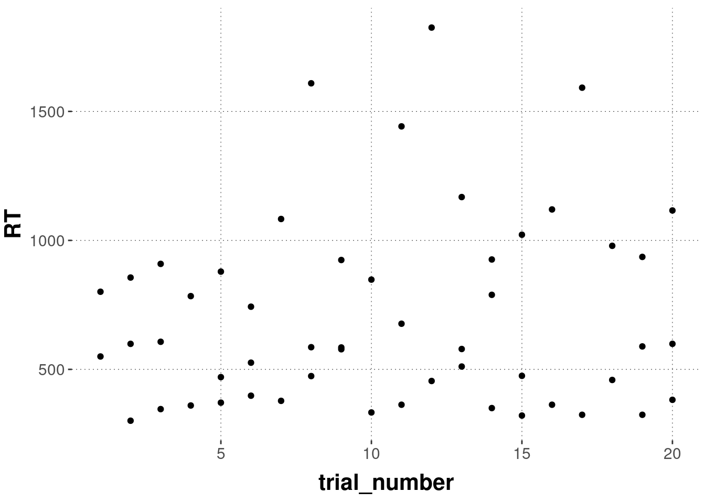
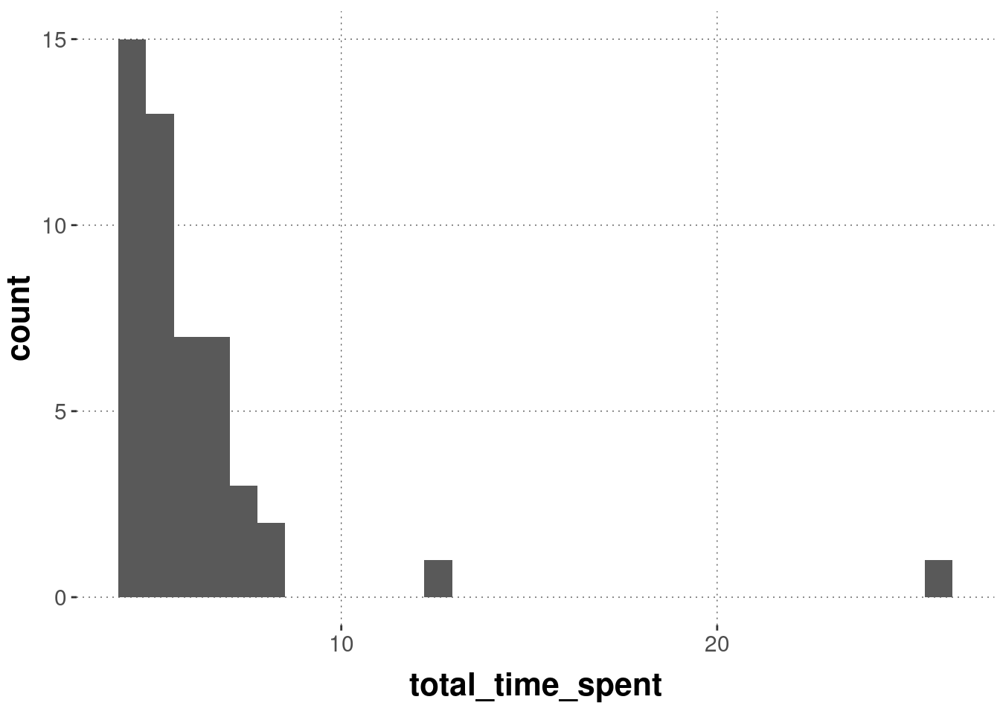

D.1 Mental Chronometry
D.1.1 Nature, origin and rationale of the data

Franciscus Donders is remembered as one of, if not the first experimental cognitive psychologists. He famously introduced the subtraction logic which looks at differences in reaction times across different tasks to infer the difference in the complexity of the mental processes involved in these tasks. The Mental Chronometry data set presents the results of an online replication of one such subtraction-experiment.
D.1.1.1 The experiment
Fifty participants were recruited using the crowd-sourcing platform Prolific and paid for their participation.
In each experimental trial, participants see either a blue square or a blue circle appear on the screen and are asked to respond as quickly as possible. The experiment consists of three parts, presented to all participants in the same order (see below). The parts differ in the adequate response to the visual stimuli.
Reaction task
The participant presses the space bar whenever there is a stimulus (square or circle).
Recorded: reaction time
Go/No-Go task
The participant presses the space bar whenever their target (one of the two stimuli) is on the screen.
Recorded: the reaction time and the response
Discrimination task
The participant presses the F key on the keyboard when there is one of the stimuli and the J key when there is the other one of the stimuli on the screen.
Recorded: the reaction time and the response
The reaction time measurement starts from the onset of the visual stimuli to the button press. The response variable records whether the reaction was correct or incorrect.
For each participant, the experiment randomly allocates one shape (circle or square) as the target to be used in both the second and the third task.
The experiment was realized using _magpie and can be tried out here.
D.1.2 Loading and preprocessing the data
The raw data produced by the online experiment is not particularly tidy. It needs substantial massages before plotting and analysis.
mc_data_raw <- aida::data_MC_raw
glimpse(mc_data_raw)## Rows: 3,750
## Columns: 32
## $ submission_id <dbl> 8554, 8554, 8554, 8554, 8554, 8554, 8554, 8554, 8554, 85…
## $ QUD <chr> "Press SPACE when you see a shape on the screen", "Press…
## $ RT <dbl> 376, 311, 329, 270, 284, 311, 269, 317, 325, 240, 262, 2…
## $ age <dbl> 21, 21, 21, 21, 21, 21, 21, 21, 21, 21, 21, 21, 21, 21, …
## $ comments <chr> NA, NA, NA, NA, NA, NA, NA, NA, NA, NA, NA, NA, NA, NA, …
## $ correctness <chr> "correct", "correct", "correct", "correct", "correct", "…
## $ education <chr> "high school / college", "high school / college", "high …
## $ elemSize <dbl> 100, 100, 100, 100, 100, 100, 100, 100, 100, 100, 100, 1…
## $ endTime <dbl> 1.570374e+12, 1.570374e+12, 1.570374e+12, 1.570374e+12, …
## $ expected <chr> NA, NA, NA, NA, NA, NA, NA, NA, NA, NA, NA, NA, NA, NA, …
## $ experiment_id <dbl> 68, 68, 68, 68, 68, 68, 68, 68, 68, 68, 68, 68, 68, 68, …
## $ f <chr> NA, NA, NA, NA, NA, NA, NA, NA, NA, NA, NA, NA, NA, NA, …
## $ focalColor <chr> "blue", "blue", "blue", "blue", "blue", "blue", "blue", …
## $ focalNumber <dbl> 1, 1, 1, 1, 1, 1, 1, 1, 1, 1, 1, 1, 1, 1, 1, 1, 1, 1, 1,…
## $ focalShape <chr> "square", "square", "circle", "square", "circle", "circl…
## $ gender <chr> "female", "female", "female", "female", "female", "femal…
## $ j <chr> NA, NA, NA, NA, NA, NA, NA, NA, NA, NA, NA, NA, NA, NA, …
## $ key1 <lgl> NA, NA, NA, NA, NA, NA, NA, NA, NA, NA, NA, NA, NA, NA, …
## $ key2 <chr> NA, NA, NA, NA, NA, NA, NA, NA, NA, NA, NA, NA, NA, NA, …
## $ key_pressed <chr> NA, NA, NA, NA, NA, NA, NA, NA, NA, NA, NA, NA, NA, NA, …
## $ languages <chr> "Right", "Right", "Right", "Right", "Right", "Right", "R…
## $ pause <dbl> 2631, 1700, 1322, 1787, 1295, 2330, 1620, 2460, 1580, 17…
## $ response <chr> "space", "space", "space", "space", "space", "space", "s…
## $ sort <chr> "grid", "grid", "grid", "grid", "grid", "grid", "grid", …
## $ startDate <chr> "Sun Oct 06 2019 15:45:19 GMT+0100 (Hora de verão da Eur…
## $ startTime <dbl> 1.570373e+12, 1.570373e+12, 1.570373e+12, 1.570373e+12, …
## $ stimulus <chr> "square", "square", "circle", "square", "circle", "circl…
## $ target <chr> "square", "square", "circle", "square", "circle", "circl…
## $ timeSpent <dbl> 7.2514, 7.2514, 7.2514, 7.2514, 7.2514, 7.2514, 7.2514, …
## $ total <dbl> 1, 1, 1, 1, 1, 1, 1, 1, 1, 1, 1, 1, 1, 1, 1, 1, 1, 1, 1,…
## $ trial_number <dbl> 1, 2, 3, 4, 5, 1, 2, 3, 4, 5, 6, 7, 8, 9, 10, 11, 12, 13…
## $ trial_type <chr> "reaction_practice", "reaction_practice", "reaction_prac…The most pressing problem is that entries in the column trial_type contain two logically separate pieces of information: the block (reaction, go/no-go, discrimination) and whether the data comes from a practice trial (which we want to discard) or a main trial (which we want to analyze). We therefore separate this information, and perform some other massages, to finally select a preprocessed data set for further analysis:
block_levels <- c("reaction", "goNoGo", "discrimination") # ordering of blocks for plotting, etc.
mc_data_preprocessed <- mc_data_raw %>%
separate(trial_type, c("block", "stage"), sep = "_", remove = FALSE) %>%
mutate(comments = ifelse(is.na(comments), "non given", comments)) %>%
filter(stage == "main") %>%
mutate(
block = factor(block, ordered = T, levels = block_levels),
response = ifelse(is.na(response), "none", response)
) %>%
filter(response != "wait") %>%
rename(
handedness = languages, # variable name is simply wrong
total_time_spent = timeSpent,
shape = focalShape
) %>%
select(
submission_id,
trial_number,
block,
shape,
RT,
handedness,
gender,
total_time_spent,
comments
)D.1.3 Cleaning the data
Remember that the criteria for data exclusion should ideally be defined before data collection (or at least inspection). They should definitely never be chosen in such a way as to maximize the “desirability” of an analysis. Data cleaning is not a way of making sure that your favorite research hypothesis “wins”.
Although we have not preregistered any data cleaning regime or analyses for this data set, we demonstrate a frequently used cleaning scheme for reaction time data, which does depend on the data in some sense, but does not require precise knowledge of the data. In particular, we are going to do this:
- We remove the data from an individual participant \(X\) if there is an experimental condition \(C\) such that the mean RT of \(X\) for condition \(C\) is more than 2 standard deviations away from the overall mean RT for condition \(C\).
- From the remaining data, we then remove any individual trial \(Y\) if the RT of \(Y\) is more than 2 standard deviations away from the mean of experimental condition \(C\) (where \(C\) is the condition of \(Y\), of course).
Notice that in the case at hand, the experimental conditions are the three types of tasks.
D.1.3.1 Cleaning by-participant
Our rule for removing data from outlier participants is this:
We remove the data from an individual participant \(X\) if there is an experimental condition \(C\) such that the mean RT of \(X\) for condition \(C\) is more than 2 standard deviations away from the overall mean RT for condition \(C\). We also remove all trials with reaction times below 100ms.
This procedure is implemented in this code:
# summary stats (means) for participants
d_sum_stats_participants <- mc_data_preprocessed %>%
group_by(submission_id, block) %>%
summarise(
mean_P = mean(RT)
)
# summary stats (means and SDs) for conditions
d_sum_stats_conditions <- mc_data_preprocessed %>%
group_by(block) %>%
summarise(
mean_C = mean(RT),
sd_C = sd(RT)
)
d_sum_stats_participants <-
full_join(
d_sum_stats_participants,
d_sum_stats_conditions,
by = "block"
) %>%
mutate(
outlier_P = abs(mean_P - mean_C) > 2 * sd_C
)
# show outlier participants
d_sum_stats_participants %>% filter(outlier_P == 1) %>% show()## # A tibble: 1 × 6
## # Groups: submission_id [1]
## submission_id block mean_P mean_C sd_C outlier_P
## <dbl> <ord> <dbl> <dbl> <dbl> <lgl>
## 1 8505 discrimination 1078. 518. 185. TRUEWhen plotting the data for this condition and this participant, we see that the high overall mean is not just caused by a single outlier, but several trials that took longer than 1 second.
mc_data_preprocessed %>%
semi_join(
d_sum_stats_participants %>% filter(outlier_P == 1),
by = c("submission_id")
) %>%
ggplot(aes(x = trial_number, y = RT)) +
geom_point()
We are then going to exclude this participant’s entire data from all subsequent analysis:93
mc_data_cleaned <- mc_data_preprocessed %>%
filter(submission_id != d_sum_stats_participants$submission_id[1])D.1.3.2 Cleaning by-trial
Our rule for excluding data from individual trials is:
From the remaining data, we then remove any individual trial \(Y\) if the RT of \(Y\) is more than 2 standard deviations away from the mean of experimental condition \(C\) (where \(C\) is the condition of \(Y\), of course). We also remove all trials with reaction times below 100ms.
The following code implements this:
# mark individual trials as outliers
mc_data_cleaned <- mc_data_cleaned %>%
full_join(
d_sum_stats_conditions,
by = "block"
) %>%
mutate(
trial_type = case_when(
abs(RT - mean_C) > 2 * sd_C ~ "too far from mean",
RT < 100 ~ "< 100ms",
TRUE ~ "acceptable"
) %>% factor(levels = c("acceptable", "< 100ms", "too far from mean")),
trial = 1:nrow(mc_data_cleaned)
)
# visualize outlier trials
mc_data_cleaned %>%
ggplot(aes(x = trial, y = RT, color = trial_type)) +
geom_point(alpha = 0.4) + facet_grid(~block) +
geom_point(alpha = 0.9, data = filter(mc_data_cleaned, trial_type != "acceptable"))
So, we remove 63 individual trials.
mc_data_cleaned <- mc_data_cleaned %>%
filter(trial_type == "acceptable")D.1.4 Exploration: summary stats & plots
What’s the distribution of total_time_spent, i.e., the time each participant took to complete the whole study?
mc_data_cleaned %>%
select(submission_id, total_time_spent) %>%
unique() %>%
ggplot(aes(x = total_time_spent)) +
geom_histogram()
There are two participants who took noticeably longer than all the others, but we need not necessarily be concerned about this, because it is not unusual for participants of online experiments to open the experiment and wait before actually starting.
Here are summary statistics for the reaction time measures for each condition (= block).
mc_sum_stats_blocks_cleaned <- mc_data_cleaned %>%
group_by(block) %>%
nest() %>%
summarise(
CIs = map(data, function(d) bootstrapped_CI(d$RT))
) %>%
unnest(CIs)
mc_sum_stats_blocks_cleaned## # A tibble: 3 × 4
## block lower mean upper
## <ord> <dbl> <dbl> <dbl>
## 1 reaction 296. 300. 304.
## 2 goNoGo 420. 427. 435.
## 3 discrimination 481. 488. 495.And a plot of the summary:
mc_sum_stats_blocks_cleaned %>%
ggplot(aes(x = block, y = mean, fill = block)) +
geom_col() +
geom_errorbar(aes(ymin = lower, ymax = upper), size = 0.3, width = 0.2 ) +
ylab("mean reaction time") + xlab("") +
scale_fill_manual(values = project_colors) +
theme(legend.position = "none") We can also plot the data in a manner that is more revealing of the distribution of measurements in each condition:
mc_data_cleaned %>%
ggplot(aes(x = RT, color = block, fill = block)) +
geom_density(alpha = 0.3)This may seem a harsh step, but when data acquisition is cheap, it’s generally not a bad strategy to be very strict in exclusion criteria, and to apply rules that are not strongly context-dependent.↩︎